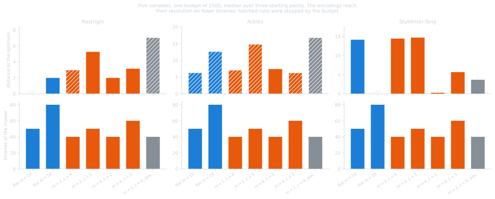

Annex D: the extensions, measured#
The four extensions of the method, table by table, and the budget re-runs behind the rankings. The results carry the verdicts; this annex carries what they were read off.
Five variables, \(2500\) equivalent evaluations, three starting points unless a table says otherwise. The constructions are derived in the methodology and the sweeps setting their parameters are in annex C.
Subdividing some variables only#
Subdividing some variables only wins where the multimodality is concentrated and loses where it is not, which is the requirement of the method restated: a variable left out keeps all of its basins inside every box. On Styblinski-Tang, multimodal in every variable, leaving three of the five out takes a run from two starting points out of three to none.
subdivision of |
boxes |
binaries |
gap |
cost |
reached |
|---|---|---|---|---|---|
all 5 variables, \(m=2\) |
32 |
10 |
\(1.99\) |
540 |
0/3 |
3 variables, \(m=4\) |
64 |
12 |
\(0.00\) |
773 |
3/3 |
2 variables, \(m=10\) |
100 |
20 |
\(0.00\) |
858 |
3/3 |
2 variables, \(m=5\) |
25 |
10 |
\(1.99\) |
620 |
0/3 |
1 variable, \(m=10\) |
10 |
10 |
\(3.98\) |
419 |
0/3 |
The cheapest configuration that works is not the one matching the
multimodality exactly. partly_multimodal is Rastrigin in two variables and a
paraboloid in three, yet splitting three variables into four beats splitting
the two into ten, \(773\) evaluations against \(858\): twelve binaries against
twenty, and the extra variable costs nothing to subdivide because it is unimodal
in every box. The binaries govern here as everywhere else.
The multi-resolution encoding#
One categorical variable per level, with the box index read off as its base-\(m\) digits, is the one construction here that changes how many binaries a resolution costs. Five variables, three starting points, the same budget of \(2500\), median distance to the optimum:
encoding |
binaries |
resolution |
Rastrigin |
Ackley |
Styblinski-Tang |
|---|---|---|---|---|---|
flat, \(m=10\) |
50 |
10 |
\(0.00\) · 3/3 |
\(6.30\)† |
\(14.14\) · 1/3 |
flat, \(m=16\) |
80 |
16 |
\(1.99\) |
\(12.63\)† |
\(0.00\) · 2/3 |
levels \(m=2\), \(L=4\) |
40 |
16 |
\(2.99\)† |
\(7.08\)† |
\(14.44\) |
levels \(m=2\), \(L=5\) |
50 |
32 |
\(5.25\) |
\(14.82\)† |
\(14.70\) |
levels \(m=4\), \(L=2\) |
40 |
16 |
\(1.99\) · 1/3 |
\(7.40\) |
\(0.27\) · 1/3 |
levels \(m=4\), \(L=3\) |
60 |
64 |
\(3.14\) · 1/3 |
\(6.28\)† |
\(5.67\) |
levels \(m=2\), \(L=4\), positional |
40 |
16 |
\(7.04\)† |
\(16.81\)† |
\(3.68\) · 1/3 |
† stopped by the budget.


The construction does what it claims. Two levels of four reach a resolution of sixteen on forty binaries against the eighty of the flat encoding, and at that resolution they are not worse for it: \(1.99\) against \(1.99\) on Rastrigin, with one starting point reaching the optimum where flat \(m=16\) reaches none, and \(0.27\) against \(0.00\) on Styblinski-Tang for fewer evaluations, \(920\) against \(973\). The saving grows with the resolution: sixty binaries buy sixty-four subdivisions per component, which would cost \(320\) flat.
Styblinski-Tang is where it earns its place. That problem is the one the density sweep breaks on: ten subdivisions per variable, the best density elsewhere, returns \(14.14\) and reaches the optimum from one starting point out of three. Sixteen subdivisions fix it, and the cheapest way to sixteen is two levels of four, which gets within \(0.27\) of the optimum on half the binaries of the flat encoding that matches it. Where the useful density is above what the binaries can afford, this is the construction that reaches it.
It does not rescue the problems whose difficulty is elsewhere. On Rastrigin nothing beats plain flat \(m=10\), whose resolution the encoding was never needed for, and on Ackley every configuration is truncated by the budget and none reaches the optimum, the difficulty there being a basin too broad for any resolution rather than a resolution too expensive.
Fewer, wider levels beat more, narrower ones. At the same resolution of sixteen and the same forty binaries, \(m=4, L=2\) beats \(m=2, L=4\) on all three problems, by \(1.99\) against \(2.99\), \(7.40\) against \(7.08\) near enough, and \(0.27\) against \(14.44\). Adding levels is what makes the cut model’s additivity bind: it is linear in the one-hot variables, so it can express what a level contributes on its own but not that a fine digit’s effect depends on the coarse digit it sits inside, and each level is another dimension over which that is wrong. The five-level row is the worst unit row on two problems out of three.
The positional weighting stays the wrong choice, worst on Rastrigin and Ackley by a wide margin, which is the trust-region metric conclusion reappearing in a second and independent setting: weighing a subdivision by its own index expresses a proximity the problem does not have.
The hierarchies#
A hierarchy was built in three shapes. The deep one reaches the optimum of Ackley from four starting points out of six, which nothing else here does; none of them beats the flat subdivision elsewhere.
method |
Rastrigin |
Ackley |
Styblinski-Tang |
|---|---|---|---|
flat \(m=2\) |
\(4.98\) |
\(14.43\) |
\(0.00\), 5/6, 486 |
flat \(m=10\) |
\(0.00\), 6/6, 1920 |
\(6.30\), 2500† |
\(0.00\), 1/6, 532 |
two levels, by value |
\(4.98\) |
\(6.30\) |
\(0.00\), 5/6, 872 |
two levels, by cuts |
\(2.45\) |
\(8.11\) |
\(0.00\), 5/6, 987 |
deep, 4 levels of 2 |
\(4.98\) |
\(0.00\), 4/6, 2387 |
\(0.00\), 5/6, 1494 |
frontier, best first |
\(6.70\), 2500† |
\(9.71\), 2500† |
\(0.00\), 6/6, 2500† |
† stopped by the budget. The frontier is truncated by construction, its loop expanding boxes until the budget is spent.


Two readings the medians alone hide, and one caveat that undoes part of the first.
The deep hierarchy solves Ackley at five variables, from four starting points out of six, and it ends on its own criterion at \(2387\) evaluations rather than on the budget. The flat subdivision at the same density returns \(6.30\) here, but four of its six runs were stopped by the budget, so this row understates it: given twice the budget it reaches the optimum from two starting points out of six, and no further with more. The margin is four out of six against two, which is measured below rather than read off this table.
On Styblinski-Tang every configuration solves the problem, so that panel is about cost alone, and the flat coarse subdivision wins outright, \(486\) evaluations against \(872\) to \(2500\) for the hierarchies. The frontier is the only shape reaching it from all six starting points, for five times the cost of the cheapest that reaches five.
The frontier, which is the only shape able to undo a choice, is the worst of the family on Rastrigin, \(6.70\) against \(4.98\) for doing nothing at all, and the reason is not the backtracking it adds but what it costs: every node restarts a master and throws its cuts away, so the same budget that fills one model with fifty cuts fills ten models with five each, none of them determined enough to rank its own children. What the flat method does instead is keep one model over the whole subdivision and localize with its trust region, which can also widen again.
So the hierarchies are not a default and are not a failure either. They are the answer to one specific shape of problem, a basin too broad for any affordable density, and the flat subdivision remains the answer everywhere else.
Does more budget change the answer?#
Several comparisons above are between runs the budget stopped, so the obvious question is whether the rankings are properties of the method or of the number \(2500\). On the one comparison where it matters most, Ackley at five variables, the answer is measured rather than argued. Six starting points:
budget |
flat \(m=10\) |
deep, 4 levels of 2 |
|---|---|---|
\(2500\) |
\(6.30\) · 2500 · 0/6 · 4 of 6 at the wall |
\(0.00\) · 2387 · 4/6 · none at the wall |
\(5000\) |
\(5.62\) · 3306 · 2/6 · none at the wall |
\(0.00\) · 3093 · 4/6 · none at the wall |
\(10\,000\) |
\(5.62\) · 3306 · 2/6 · none at the wall |
\(0.00\) · 3093 · 4/6 · none at the wall |
Two things follow, and the first is a correction.
The budget was hiding part of the flat method’s result. At \(2500\) it reaches the optimum from no starting point; given twice that, it reaches it from two out of six. The comparison that produced “only the hierarchy solves Ackley” was between a truncated run and a finished one, and the honest margin is four out of six against two, not four against none.
Past that, more budget buys nothing at all. The rows at \(5000\) and \(10\,000\) are identical, to the evaluation: both configurations stop at \(3306\) and \(3093\) evaluations whatever they are allowed. They end on their own caps, the trust region shrinking to infeasibility or the stall counter firing, described in annex C. So on this problem the budget is not the binding constraint and raising it is not the way; what binds is the stopping rule.
That is the general answer to the question, and it cuts both ways. Where a cell reports a cost below its budget, the budget was never binding and the comparison stands as measured, which covers most of this page, including the whole Rastrigin column: flat \(m=10\) solves it from all six starting points for \(1920\) evaluations at a budget of \(2500\), of \(5000\) and of \(10\,000\) alike. Where a cell reports a cost equal to its budget, the number is an upper bound and the ranking is only “within this budget” until it is re-run, as Ackley was here.
What the results make of all this is the page these tables support.
Estimating the density instead of supplying it#
The density of the subdivision is the one setting with no default, and
the conclusion names estimating it as the next
step worth taking. benchmarks/basin_spacing.py estimates it, from the landscape
rather than from the dimension.
The estimand is not a wavelength. A general objective has no single wavelength per direction, the restriction of \(f\) to a line along \(e_j\) having a spectrum that depends on where the line is. What is well defined for any \(C^1\) objective is the expected number of minima along such a line,
which is exactly what the subdivision has to separate, so \(m_j = N_j\) directly.
This assumes the multimodality is in the objective, and that assumption is
the estimator’s boundary rather than a detail of it. Where the basins are cut
instead by non-convex constraints — a disconnected feasible set, or a
minimum pinned wherever the active set changes — a scan of \(f\) alone sees none
of them. It does not see them and says so with confidence: given an objective
that is monotone along every line, as a mass is, and a constraint whose feasible
set falls into six intervals along each axis, the estimator returns \(m = 1\) per
component and reports the ladder converged, because the objective really
does have one basin. The one-sided guarantee still holds; it holds about the
wrong function. Stress-constrained sizing and topology problems are the case
that matters here, and estimate_basins should not be pointed at one. The
constraint-aware estimand is below.
That expectation is a Monte Carlo integral over axial line scans: draw an anchor at random, sweep one component across its bounds, count the minima deep enough to matter. A space-filling design does not serve here — averaging it over the other components estimates the ANOVA main effect \(\mathbb{E}[f \mid x_j]\), and the multimodality of Griewank, a product over every component, and of Ackley, inside a norm, does not survive that average.
Five variables, five anchors per component, the ladder of scan rates stopping when the count stops growing:
problem |
proposed \(m\) |
binaries |
scan cost |
resolved |
|---|---|---|---|---|
Rastrigin |
10 10 10 10 10 |
50 |
12 525 |
yes |
Ackley |
62 62 62 63 63 |
312 |
25 350 |
no |
Styblinski-Tang |
2 2 2 2 2 |
10 |
1250 |
yes |
Griewank |
19 13 11 5 8 |
56 |
12 525 |
yes |
|
10 10 1 1 1 |
23 |
6100 |
yes |
Note
The comparisons further down were measured before the prominence of a minimum was corrected, so their Griewank rows carry the density 19 13 11 7 9 that the estimator proposed then, and their Ackley rows 63 rather than 62. Nothing else moved.
Every converged row recovers a count that can be checked by hand: Rastrigin’s
minima are a unit apart over a range of ten, Styblinski-Tang is a quartic double
well, Griewank’s \(j\)-th component has period \(2\pi\sqrt{j}\) and the estimate
falls with \(j\) as it should. partly_multimodal is the one to notice: the
amplitude gate proposes a single subdivision for the three paraboloid
components, which is the partial refinement of the section above reached from the
landscape instead of declared.
What the proposal is worth#
Each problem is given four times the budget its own estimate implies, so that every run ends on its own criterion rather than at a wall. Three starting points:
problem |
density |
binaries |
predicted |
gap |
cost |
reached |
|---|---|---|---|---|---|---|
Rastrigin |
proposed, 10 ×5 |
50 |
2000 |
\(0.00\) |
2103 |
3/3 |
Rastrigin |
2 ×5 |
10 |
400 |
\(4.97\) |
823 |
0/3 |
Ackley |
proposed, 63 ×5 |
314 |
12 560 |
\(12.75\) |
5372 |
0/3 |
Ackley |
2 ×5 |
10 |
400 |
\(14.43\) |
892 |
0/3 |
Ackley |
10 ×5 |
50 |
2000 |
\(6.30\) |
3385 |
1/3 |
Styblinski-Tang |
proposed, 2 ×5 |
10 |
400 |
\(0.00\) |
458 |
2/3 |
Styblinski-Tang |
10 ×5 |
50 |
2000 |
\(14.14\) |
598 |
1/3 |
Griewank |
proposed, 19 13 11 7 9 |
59 |
2360 |
\(0.064\) |
3463 |
1/3 |
Griewank |
2 ×5 |
10 |
400 |
\(0.061\) |
1016 |
0/3 |
Griewank |
10 ×5 |
50 |
2000 |
\(0.027\) |
3166 |
0/3 |
|
proposed, 10 10 1 1 1 |
23 |
920 |
\(0.00\) |
858 |
3/3 |
|
2 ×5 |
10 |
400 |
\(1.99\) |
540 |
0/3 |
|
10 ×5 |
50 |
2000 |
\(0.00\) |
1554 |
3/3 |
On every problem the ladder resolved, the proposal picks the better of the two
fixed densities, and on one it beats both: partly_multimodal reaches the
optimum from every starting point for \(858\) evaluations against \(1554\) for a flat
ten, by leaving its three unimodal components out. The two reversals the
benchmark is built around both come out right without being told — ten for
Rastrigin, two for Styblinski-Tang — and no single fixed density gets both.
The budget the estimate implies is about right too. Predicted against
measured: \(2000\) against \(2103\) on Rastrigin, \(400\) against \(458\) on
Styblinski-Tang, \(920\) against \(858\) on partly_multimodal, \(2360\) against
\(3463\) on Griewank. The rule \(\sum_j m_j\) sub-problems lands within a third on
all four, which is what the coefficients-to-cuts ratio of
the methodology predicts.
And the one row it gets wrong is the one it flags. Ackley’s ladder does not
converge, and its proposal of sixty-three is worse than a flat ten, \(12.75\)
against \(6.30\). Its ripples are a unit apart over a range of sixty-four, so
per-basin boxing is the wrong target entirely: a density that separates them is
correct as a count and useless as a subdivision, because what has to be resolved
on Ackley is the funnel and not the texture on it, which is the case
the hierarchies exist for. The estimate says so in advance —
converged is false — and that flag is the part worth keeping: it separates the
three problems whose proposal to trust from the one whose proposal to discard.
Ackley also confirms that the budget is not what binds it. Granted \(50\,240\) evaluations it stops at \(5372\), on its own trust region or stall counter, exactly as the budget re-runs found.
Where the constraints cut the basins#
Pass a constraint and what is counted stops being the basins of the objective
and becomes the basins of the problem: the minima of \(f\) restricted to the
feasible set. Along a line that set is a union of intervals, so the count
decomposes, and count_minima_over_feasible is that decomposition — within each
maximal feasible interval the minima the prominence gate keeps, and for an
interval holding none the interval itself, whose minimum sits on a boundary.
That boundary case is the point rather than a tidy-up. A minimum pinned where an interval ends is a minimum pinned where the active set changes, and it is a basin the subdivision must separate exactly as an interior one is. One rule therefore covers both of the ways a constraint makes a problem multimodal: a feasible set in pieces, and an optimum held against a constraint active on one side of it only.
On the landscape that defeated the objective-only scan — a mass, monotone along every line, under a limit feasible where \(\cos(\pi x_j) \le 1/2\), which over a range of ten is six intervals per axis:
proposed \(m\) |
ladder |
|
|---|---|---|
objective only |
\((1, 1, 1)\) |
converged |
with the constraint |
\((6, 6, 6)\) |
converged |
Two details decide whether this is honest rather than merely different.
The gate is read against the line, not against the piece. A narrow feasible
sliver at the bottom of a bowl holds ripples that are enormous relative to the
sliver and negligible relative to the problem; measured against the sliver they
are ten basins, and against the range of the whole scan, one. So the range is
passed down to count_minima rather than recomputed per interval.
An infeasible line is not one basin. An anchor drawn at random can put a
whole line outside the feasible set, and such a line carries no information
rather than the information that there is a single basin. Those are redrawn, up
to FEASIBLE_ANCHOR_ATTEMPTS per line, and a component that never meets the
constraint raises NoFeasibleScanError instead of returning a count — because
the count it would return is exactly the confident wrong answer this section
exists to remove. This is not hypothetical: the first run of the experiment above
reported zero feasible segments, the off-axis anchor having sat outside the
constraint.
What this still does not reach#
Stress-constrained sizing and topology are the motivating case, and three limits are worth stating plainly rather than discovering later.
The parameterisation. Subdividing a field of \(10^4\) to \(10^6\) element densities is not a thing this method does, and the scan cost is \(n_\text{lines} \times n_\text{points} \times n\) evaluations, each a solve. This transfers to a reduced space — component positions, sizing, material or layout choices — not to a raw density field.
Boundaries that are not axis aligned. A stress-feasible region is rarely a slab normal to a design variable. An axial scan across a diagonal boundary sees many short intervals and overcounts, or threads a gap and undercounts. The weakness is materially worse here than for an objective, where averaging over anchors is a defensible main effect; feasibility along a line depends on the anchor far more strongly than a value does.
Singular optima. In stress-constrained topology optimisation the true optimum can lie in a degenerate subdomain of the feasible set, reachable only under \(\varepsilon\)- or \(qp\)-relaxation (Cheng and Guo, 1997; Duysinx and Bendsøe, 1998). Those branches carry no volume, so no sampling of feasibility will ever land on them. That one is not a matter of spending more points.
Why the scan is irregular#
The error of the estimator is one sided — a scan reveals the basins it resolves and never more — so the only stopping rule available is to refine until the count stops growing. That rule is invalid on an evenly spaced scan, because a uniform grid whose spacing resonates with the landscape aliases, and aliasing is silent. The ladder of Ackley, by rung:
scan |
rung 1 |
2 |
3 |
4 |
5 |
6 |
stopped on |
|---|---|---|---|---|---|---|---|
uniform |
1 |
1 |
— |
— |
— |
— |
1 |
jittered |
4 |
9 |
20 |
36 |
55 |
62 |
did not |
The uniform scan agrees with itself twice and terminates on a count wrong by a factor of sixty, having given no sign of it. Drawing the abscissae at random removes the resonance, and the ladder then climbs without settling, which is the correct report. The jitter is therefore not a refinement of the estimator; it is what makes its stopping rule mean anything.
python -m benchmarks.basin_spacing
The trust region that closes, and the patience it needs#
The tables above are measured at the catalogue settings, so that what they vary is the density. One setting underneath them turns out to matter as much, and it is not the one it looks like.
The master shrinks its step by \(0.7\) every step_decreasing_activation stalling
iterations down to min_step, and widens it again only on an improvement. The
catalogue floor is one, so six stalling iterations pin the region at a radius of
one for good. That also silences the parallel probes, whose radii are
geomspace(max(step / 2, min_step), step): four points at a step of two probe
\(1\), \(1.26\), \(1.59\) and \(2\), and once the step reaches one all four solve the
same problem four times over. The exploration does not narrow, it stops.
The stalling counter, which looks like the culprit, is not. Raised from ten to the binaries while the region still collapses, it leaves Ackley at ten subdivisions bit for bit where it was, \(6.3021\) for \(3385\) evaluations at either value. At sixty-three subdivisions it moves the gap from \(14.31\) to \(14.01\) for eighteen times the wall clock.
Holding the floor at the tuned radius is what pays, and it needs the patience
with it. A region that stays wide stalls more often than one narrowing onto
whatever it can still improve, so the floor taken alone stops a run earlier
rather than later: Rastrigin, solved from every starting point at \(2103\)
evaluations, falls to \(0.99\) and one out of three. Sized together, at
min_step \(= 2\) and upper_bound_stall \(= \sum_j m_j\), five variables, three
starting points, each problem at its proposed density and Ackley at ten:
problem |
settings |
gap |
cost |
reached |
|---|---|---|---|---|
Rastrigin |
catalogue |
\(0.0000\) |
2103 |
3/3 |
Rastrigin |
both |
\(0.0000\) |
5673 |
3/3 |
Ackley, \(m=10\) |
catalogue |
\(6.3021\) |
3385 |
1/3 |
Ackley, \(m=10\) |
both |
\(4.9449\) |
4570 |
1/3 |
Styblinski-Tang |
catalogue |
\(0.0000\) |
458 |
2/3 |
Styblinski-Tang |
both |
\(0.0000\) |
473 |
3/3 |
Griewank |
catalogue |
\(0.0644\) |
3463 |
1/3 |
Griewank |
both |
\(0.0348\) |
9440 (at the wall) |
1/3 |
|
catalogue |
\(0.0000\) |
858 |
3/3 |
|
both |
\(0.0000\) |
730 |
3/3 |
\(4.95\) on Ackley is the best a flat subdivision reaches anywhere in this
benchmark, against the \(6.30\) of
the density sweep, and it
comes from a setting rather than from a mechanism. Quality never gets worse
and improves on three of the five. What it costs is evaluations, and not
evenly: partly_multimodal gets cheaper, Styblinski-Tang is flat, Ackley is
\(1.35\) times dearer and Rastrigin \(2.7\) times. Griewank’s row spent its whole
budget, so its \(0.0348\) is an upper bound on a run that had not finished.
That is a trade rather than a default, which is why the tables above keep the catalogue values and this one stands beside them. What it establishes is narrower and firmer than a new setting: the runs of this benchmark end on a trust region that has closed, not on the patience of the master, and the two have to move together because holding the region open is what makes a run stall.
run_at_density(problem, 5, density, seed, budget,
stall=stall_counter(density), min_step=MIN_STEP)
What was actually losing Ackley: the margin, not the density#
Every table above carries min_dfk at the value configurations.py calibrated,
\(100\). That value is absolute, in the units of the objective, and the five
problems here do not span comparable ranges:
problem |
range |
\(100\) is |
reaches the optimum |
|---|---|---|---|
Styblinski-Tang |
\(549.7\) |
18% |
yes |
Rastrigin |
\(186.7\) |
54% |
yes |
|
\(164.1\) |
61% |
yes |
Ackley |
\(14.5\) |
690% |
no |
Griewank |
\(4.9\) |
2045% |
no |
The two problems the margin dwarfs are exactly the two that never reached the
optimum, and the mechanism is visible in the repair. It builds
rhs = l_df_k - df_k + min_dfk, the amount a cut over-predicts plus the margin,
and clips it below at zero. Once the margin is several times the range,
l_df_k - df_k cannot move it: the clip never fires, the least squares is
driven by a constant instead of by the measurements, and every slope is shifted
along one fixed direction. The cut model ranks the boxes by the margin rather
than by the landscape.
Sweeping the margin at \(m = 10\) on Ackley, three starting points, nothing else touched, shows a window rather than a trend:
|
% of range |
gap |
cost |
reached |
|---|---|---|---|---|
\(100\) |
690% |
\(6.3021\) |
3385 |
1/3 |
\(30\) |
207% |
\(4.9449\) |
2721 |
1/3 |
\(10\) |
69% |
\(0.0000\) |
2450 |
2/3 |
\(3\) |
21% |
\(12.8332\) |
1287 |
0/3 |
\(1\) |
7% |
\(8.9861\) |
927 |
0/3 |
The estimated density with the convexity swept#
Which is what the sweep exists to remove. Run at the estimated densities with nothing supplied at all, neither a margin nor a density, against the same densities at the calibrated margin:
problem |
density |
swept |
calibrated |
|---|---|---|---|
Styblinski-Tang |
2⁵ |
\(0.0000\) · 601 · 3/3 |
\(0.0000\) · 458 · 2/3 |
|
10 10 1 1 1 |
\(0.0000\) · 729 · 3/3 |
\(0.0000\) · 858 · 3/3 |
Ackley |
10⁵ |
\(0.0000\) · 2622 · 2/3 |
\(6.3021\) · 3385 · 1/3 |
Griewank |
19 13 11 7 9 |
\(0.0074\) · 3083 · 2/3 |
\(0.064\) · 3463 · 1/3 |
Ackley |
63⁵ (estimated) |
\(7.6161\) · 3459 · 0/3 |
\(14.31\) · 2094 · 0/3 |
Rastrigin |
10⁵ |
\(0.9950\) · 1547 · 0/3 |
\(0.0000\) · 2103 · 3/3 |
The sweep solves both problems the calibrated margin loses. Ackley at ten subdivisions reaches the optimum from two starting points out of three, which nothing else on this page does with a flat subdivision, and Griewank from two where the margin reached it from one. Neither needed a convexity value, and neither needed a density: the scans proposed those.
It also loses Rastrigin, which the calibrated margin solves from every
starting point. That is worth stating against the claim that the swept
configuration matches the calibrated one on every row, which was measured at the
density baselines.py defaults to rather than at ten in five variables. The
calibrated margin is 54% of Rastrigin’s range, inside the window above, and it
was calibrated on Rastrigin: it works there and on the two problems whose ranges
happen to resemble it. The swept run stops at \(1547\) evaluations with a gap of
\(0.9950\), one basin short, so what ends it is worth a look the way the margin
was.
And it does not rescue the estimated density. Ackley at sixty-three improves
from \(14.31\) to \(7.62\) and still reaches the optimum from nowhere, so the flag
estimate_basins raises on that row was right for a reason that has nothing to
do with the convexity: sixty-three separates the ripples, and what has to be
resolved on Ackley is the funnel under them.
Warning
This supersedes the reading of the section above, not its measurements. Those runs all carried the margin at 690% of Ackley’s range, so they describe a method whose cut model ranks nothing, and opening the trust region helped because the region was then the only thing steering. The numbers stand; the explanation that the runs “end on a trust region that has closed” holds only under a margin that has already killed the cuts. Whether holding the region open is worth anything under the sweep is not measured here.
The amplitude gate, corrected, and what it still cannot do#
count_minima used to measure a dip against the highest point anywhere to each
side of it. Inside a bowl that is the far wall, so every ripple looked as deep
as the bowl carrying it and the gate never fired: ripples a hundredth of the
range deep on a parabola were kept at a threshold of one half. It now measures
topographic prominence, walking out to the first point below the minimum and
taking the highest point crossed, which is the saddle that actually closes the
basin. A side reaching the bound without ever dropping lower is open, and the
basin is worth what the closed side says, which is what keeps the minimum a
tenth of a unit inside Rastrigin’s lower bound in the count.
The correction barely moves the estimates — Ackley \(63 \to 62\), Griewank \(19\,13\,11\,7\,9 \to 19\,13\,11\,5\,8\), the rest unchanged — and that is the finding. Ackley’s ripples are not shallow in prominence: each is worth its adjacent ridge, \(\exp(S/5)\cdot 0.403\) for \(S\) the sum of the four perpendicular cosines, which is 1% to 5% of the range the scan spans. Sweeping the gate shows no threshold separating them from basins that matter:
|
Rastrigin |
Ackley |
Styblinski-Tang |
Griewank |
|---|---|---|---|---|
0.02 |
10 ×5 |
62 62 62 63 63 |
2 ×5 |
19 13 11 5 8 |
0.10 |
10 ×5 |
60 62 62 62 62 |
2 ×5 |
5 2 9 4 1 |
0.20 |
10 ×5 |
44 61 60 60 60 |
1 1 1 1 2 |
1 1 2 1 1 |
0.30 |
10 ×5 |
1 56 56 53 55 |
1 ×5 |
1 2 1 1 1 |
By the time a gate touches Ackley it has destroyed Styblinski-Tang and Griewank, and Ackley is still at fifty-odd. No amplitude threshold turns 62 into the 10 that works, and the reason is not a defect of the gate: sixty-two is the honest basin count of an Ackley axis, its ripples being a unit apart over a range of sixty-four. Ten is not a count of anything in that landscape. It is the box width at which the sub-problem descends the funnel by itself and still returns a value that tells its box apart from the next, which is a property of the solver inside the box rather than of the objective.
That is the boundary of this estimator, stated as sharply as the measurements
allow: basins per axis is the right target only where a basin is what the
subdivision must separate. On a landscape whose fine structure the local solve
handles unaided, and whose coarse structure carries the optimum, the count is
correct and useless at the same time, and the converged flag catches the case
for the wrong reason.
The probes decide, and six of them is a hole#
A swept run spreads its ladder over the parallel probes of the master, so their number is the number of rungs. It is not a smooth knob, and reading it as one cost this annex a conclusion.
Ackley through the deep hierarchy, the convexity swept, five variables, three starting points, a budget of \(8000\):
depth |
probes |
gap |
cost |
reached |
|---|---|---|---|---|
4 |
2 |
\(9.7137\) |
489 |
0/3 |
4 |
3 |
\(9.7137\) |
1089 |
0/3 |
4 |
4 |
\(0.0001\) |
2263 |
2/3 |
4 |
6 |
\(9.7137\) |
1196 |
1/3 |
4 |
10 |
\(0.0001\) |
2802 |
3/3 |
6 |
4 |
\(0.0000\) |
3243 |
2/3 |
6 |
6 |
\(9.7137\) |
1348 |
1/3 |
6 |
10 |
\(0.0000\) |
3244 |
3/3 |
Four rungs solve it, six do not, ten solve it from every starting point. The response is not monotone, and six sits in a hole between two counts that work. The same count cost Rastrigin its result on the flat encoding, \(0.9950\) at six rungs against \(0.0000\) at ten, so the hole is not particular to a hierarchy.
With ten rungs the swept hierarchy beats the calibrated one, three starting points out of three against two, and needs no convexity value. The calibrated margin is not what the hierarchy depends on.
Warning
An earlier reading of these runs, kept in the history of this branch, reported
that the convexity policy inverts between the encodings: that a flat
subdivision needs the sweep while a hierarchy needs the absolute margin, the
sweep starving a level because its scale is read off the boxes solved inside a
shrinking box. That is wrong, and it is wrong because every swept hierarchy
behind it ran at six probes while every calibrated one ran at four, which is
what ADAPTIVE sets. The probe count was never held fixed.
Two experiments chased that reading and neither moved a digit, which was the evidence against it. Freezing the ladder’s bound at the scale the first level observed left every gap unchanged, at a frozen bound of \(96\) that already bracketed the calibrated hundred. Raising the ladder’s floor, from two decades below its top to a quarter of one, so that every rung lay between \(54\) and \(96\), left every gap unchanged again. A convexity that is varied over two orders of magnitude without moving the result is not the variable that decides it.
Counting a run that has been forked#
Everything above was measured at one process, and the reason was a limitation of
the benchmark rather than of the master. BudgetedCounter wraps the objective
and tallies the calls in the process that built it. The master solves the
candidate boxes of an iteration over number_of_processes workers, and
CallableParallelExecution leaves use_threading at its default, so those
workers are forked: a child gets a copy of the counter, spends against the copy,
and the copy dies with it. The parent’s tally is then a record of whatever the
parent happened to evaluate itself, which is a small and arbitrary fraction of
the run.
That is not a slow degradation but a wrong number, and it is wrong in the direction that flatters:
problem |
counter’s best, 1 proc |
counter’s best, 4 procs |
database’s best, 1 and 4 |
|---|---|---|---|
Rastrigin |
\(0.0000\) |
\(33.4089\) |
\(0.0000\) |
Ackley |
\(7.0756\) |
\(19.4200\) |
\(7.0756\) |
Styblinski-Tang |
\(-181.6941\) |
\(-181.6941\) |
\(-181.6941\) |
Griewank |
\(0.0271\) |
\(1.6134\) |
\(0.0271\) |
Every one of those runs reached the same optimum. Only the measurement moved. Note the third row: Styblinski-Tang is the cheapest problem here, at two subdivisions, and its counter survived four processes intact. A spot check that happened to pick it would have found nothing wrong.
What the database can return#
The master’s own database does not have this problem, because its entries are
written by the parent from what the workers send back. The Benders formulation
registers iterations as an observable of the master problem, and the adapter
of the sub-scenario fills it with the length of the sub-problem’s database — the
distinct design points that box was solved over. One entry per box, and the
entry crosses the process boundary by construction.
So the best value, the work, and the boxes are read from there instead, and they
come back identical to the digit at one process and at four, on all four
problems: \(1337\), \(2552\), \(163\) and \(1661\) evaluations over \(64\), \(84\), \(8\) and
\(64\) boxes, the same numbers twice. RunOutcome carries them.
What it cannot return, and why the cost stays where it is#
The cost column of every table in this suite is an equivalent objective
evaluation under the adjoint convention — an objective call plus a gradient
call — because that is the unit baselines.py reports and a cost that cannot be
set beside the baselines is not worth printing. The database cannot produce that
unit. iterations is a count of points; the cost is a count of calls.
A point visited twice counts once, and a gradient taken at a point counts not at
all:
problem |
counter’s cost |
objective calls |
database’s evaluations |
of the cost |
of the calls |
|---|---|---|---|---|---|
Rastrigin |
2115 |
1361 |
1337 |
\(0.63\) |
\(0.98\) |
Ackley |
3685 |
2563 |
2552 |
\(0.69\) |
\(1.00\) |
Styblinski-Tang |
247 |
163 |
163 |
\(0.66\) |
\(1.00\) |
Griewank |
2595 |
1667 |
1661 |
\(0.64\) |
\(1.00\) |
The right-hand column is the useful reading: the database’s count is very
nearly the objective calls with the duplicates removed, within 2% on the
worst row and exact on two of the four. What it is missing is the gradients, and
those are not a fixed fraction — the ratio to the cost runs from \(0.63\) to
\(0.69\) across four problems on one seed each. There is no conversion to apply,
so none is applied. The two are reported side by side, in their own units, and
RunOutcome.cost is documented as valid at one process only.
The budget stays parent-side for the same reason, and cannot be fixed the same
way. It is the counter that raises BudgetExceededError, a forked child
inherits the tally as it stood at the fork and spends against its own copy, so
no child’s spending reaches the guard. A parallel run is not budgeted, and
RunOutcome.truncated reads False however long it goes on.
None of this is the upstream fault reported as #7, which was the master losing its workers’ results outright and returning a converged optimum that was wrong. That one is fixed; these measurements were taken with the fix installed, which is why the optima agree across process counts at all. What remains is a property of counting in a process that is about to be forked away from.
Re-timed over processes, now that the work can be counted#
With the outcome read from the database, the same run can be compared across process counts honestly: the work is known to be identical, so the wall clock is the only thing left that could move. Five problems, the seed and budget of the tables above, the better of two passes on an otherwise idle four-core machine:
problem |
evaluations |
boxes |
\(t(1)\) |
\(t(2)\) |
\(t(4)\) |
at 2 |
at 4 |
|---|---|---|---|---|---|---|---|
Rastrigin |
1337 |
64 |
\(12.75\) |
\(13.47\) |
\(13.34\) |
\(0.95\) |
\(0.96\) |
Ackley |
2552 |
84 |
\(16.91\) |
\(16.96\) |
\(17.30\) |
\(1.00\) |
\(0.98\) |
Griewank |
1661 |
64 |
\(13.01\) |
\(14.02\) |
\(13.51\) |
\(0.93\) |
\(0.96\) |
Styblinski-Tang |
163 |
8 |
\(0.35\) |
\(0.48\) |
\(0.45\) |
\(0.74\) |
\(0.79\) |
|
516 |
24 |
\(1.46\) |
\(1.59\) |
\(1.63\) |
\(0.91\) |
\(0.89\) |
Every evaluation count, box count and best value there is identical across the three process counts, so these really are the same run measured three times. And not one of them got faster: the speed-up runs from \(0.74\) to \(1.00\).
Why, and what that means for the settings#
The fan-out covers _execute_doe, the evaluation of one iteration’s
trust-region probes, and that is about a tenth of a run — 9.0% on Rastrigin,
11.8% on Ackley. Amdahl’s law caps the speed-up at \(1.12\) over four workers
before anything else is weighed, and the region does not even scale: its batches
hold number_of_parallel_points designs, four by default, some \(74\,\)ms of work
against the \(87\,\)ms it costs to fork for them.
The other nine tenths is the master’s own MILP:
problem |
wall |
MILP |
of which branch and bound |
of which built in Python |
|---|---|---|---|---|
Rastrigin |
\(12.97\) |
78.5% |
65.8% |
12.7% |
Ackley |
\(17.57\) |
72.6% |
58.2% |
14.4% |
Styblinski-Tang |
\(0.61\) |
32.2% |
22.5% |
9.7% |
So the guidance is short. Leave number_of_processes at one, and do not read
a cost as a count of sub-problems: the master dominates these runs, and the
sub-problem count is not the bottleneck it looks like.
Warning
A parallel run is not budgeted. The guard lives in the counter, the counter lives in the parent, and a forked child inherits a copy of the tally, so no child’s spending reaches it. Ackley at twenty probes against a budget of \(8000\) shows what that does to a comparison:
cost |
truncated |
evaluations |
boxes |
best |
|
|---|---|---|---|---|---|
1 process |
8000 |
yes |
5520 |
184 |
\(4.944911\) |
4 processes |
54 |
no |
7356 |
260 |
\(0.000007\) |
The serial run was stopped by its budget; the parallel one was not, took 76 more boxes and reached the optimum. That reads as parallelism solving what serial execution could not, and it is nothing of the kind.
What this benchmark found in the master, and where it went#
Reading the master closely enough to explain those numbers turned up faults and
opportunities belonging to gemseo-bilevel-outer-approximation rather than
here. They were reported there, and fixed there where they could be. This annex
keeps only what bears on configuring this package; the rest lives in the
tickets.
upstream |
what was found |
|---|---|
|
|
the master rebuilt its MILP in Python every iteration; setting the rows on the solver is \(11\times\) |
|
two problem shapes |
|
it normalises its bounds but not its constraint rows — reported, not fixed |
|
the convexity sweep, ported to the master where it belongs |
Which master is installed is not cosmetic here.
benchmarks/test_basin_spacing.py asserts that a run’s outcome is identical at
one process and at four, which is false without !139 — it is the
check that says which upstream tree a run was measured against. And
MASTER_SWEEPS_CONVEXITY is what lets this package’s own tests hold against a
master with or without !142.
Three further lines of enquiry were measured and dropped. They are recorded in those tickets rather than here, because each is a property of the master and not of this package: caching its model between iterations is worth nothing, branch and bound not warm starting from an added row; one big MILP carrying every probe’s variables is correct and 11 to 45 times slower; and generating the probes in parallel is a wash when done speculatively and a loss of reliability when done by partitioning the design space.